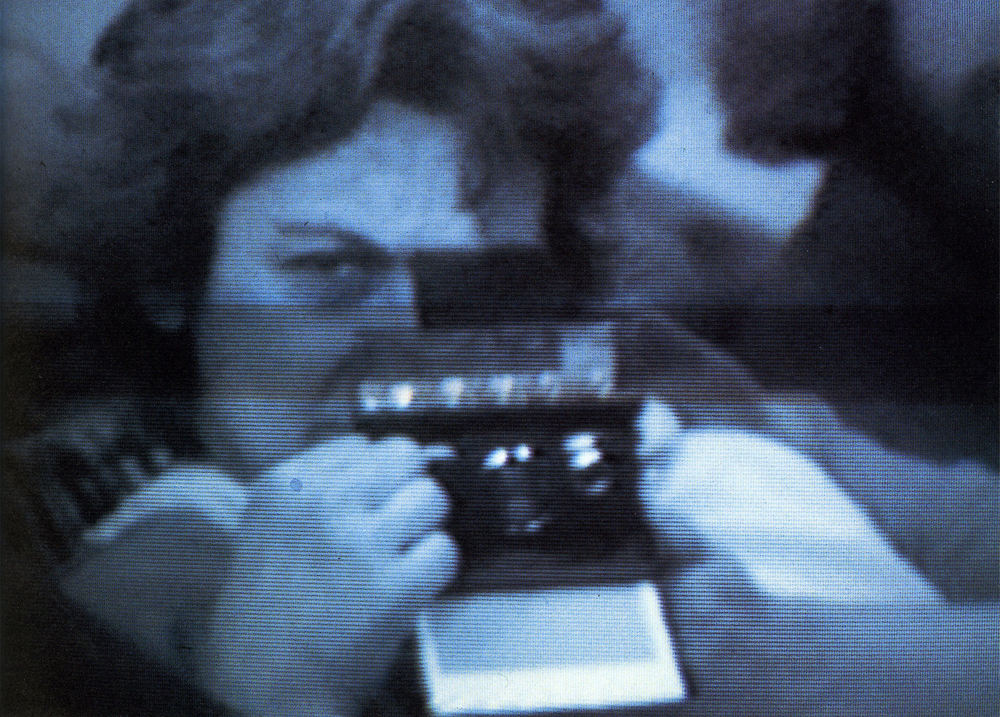
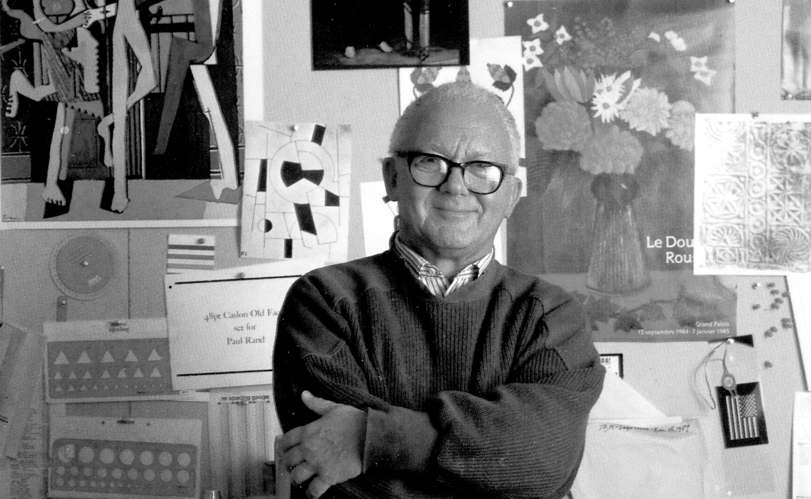

Early Life
Muriel Ruth Cooper was born in 1925 in Brookline, an inner suburb of Boston, Massachusetts. She was the middle daughter of three children.


Cooper received her Bachelor of Arts degree from Ohio State in 1944, and a Bachelor of Fine Art in design in 1948 and a Bachelor of Science in education in 1951 from Massachusetts College of Art (MassArt). After her graduation, Cooper moved to New York City and attempted to find a position in advertising. She met Paul Rand, who was influential to her design "way of life".